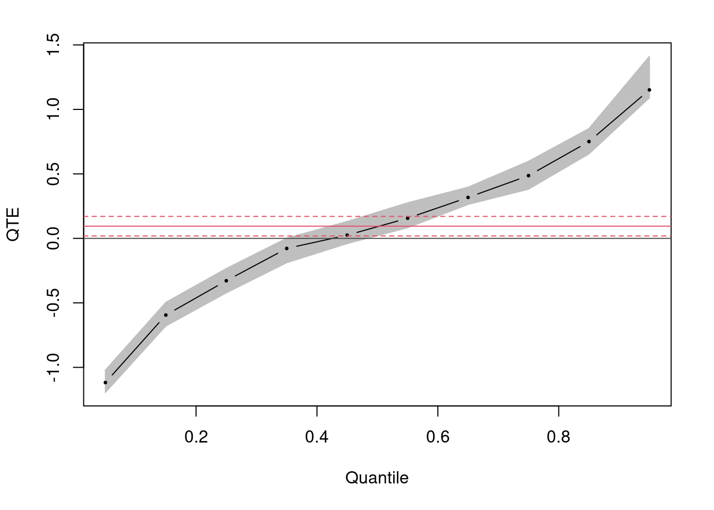

10 Types of Treatment Effect You Should Know About
Author
Paul Testa
Abstract
This guide1 describes ten distinct types of causal effects that researchers may want to estimate. As discussed in our guide 10 Things to Know About Causal Inference, simple randomization allows one to produce estimates of the average of the unit level causal effects in a sample. This average causal effect or average treatment effect (ATE) is a powerful concept because it is one solution to the problem of not observing all relevant counterfactuals. Yet, it is not the only productive engagement with this problem. In fact, there are many different types of quantities of causal interest. The goal of this guide is to help you choose estimands (a parameter of interest) and estimators (procedures for calculating estimates of those parameters) that are appropriate and meaningful for your data.
1 Average Treatment Effects
We begin by reviewing how, with randomization, a simple difference-of-means provides an unbiased estimate of the ATE. We take extra time to introduce some common statistical concepts and notation used throughout this guide.
First we define a treatment effect for an individual observation (a person, household, city, etc.) as the difference between that unit’s behavior under treatment \((Y_{i}(1))\) and control \((Y_{i}(0))\):
\[τ_{i}=Y_{i}(1)−Y_{i}(0)\]
Since we can only observe either \(Y_{i}(1)\) or \(Y_{i}(0)\) the individual treatment effect is unknowable. A quantity that we can learn about, however, is the average treatment effect (ATE) across all observations in our experiment:
Let \(D_{i}\) be an indicator for whether we observe an observation under treatment or control. If treatment is randomly assigned, \(D_{i}\) is independent, not only of potential outcomes but also of any covariates (observed and unobserved) that might predict those outcomes \(((Y_{i}(1),Y_{i}(0),X_{i}⊥⊥D_{i}))\).2
Suppose our design involves \(m\) units under treatment and \(N−m\) under control. Suppose we were to repeatedly reassign treatment at random many times and each time calculate the difference of means between treated and control groups and then to record this value in a list. In other words, for every repetition, we produce an estimate of the ATE using the the observed difference in means:3
The average of the estimates in our list will be the same as the difference of the means of the true potential outcomes had we observed the full schedule of potential outcomes for all observations. That is \(E(Y_i(1)|D=1)=E(Y_i(1)|D=0)=E(Y_i(1))\) and \(E(Y_i(0)|D=1)=E(Y_i(0)|D=0)=E(Y_i(0))\). Another way to state this characteristic of the average treatment effect and its estimator is to say that the difference of observed means is an unbiased estimator of the average treatment effect.
Statistical inference about the estimated ATE requires that we know how it will vary across randomizations. It turns out that we can write the variance of the ATE across randomizations as follows:
and estimate this quantity from the sample estimates of the variance in each group.4
A linear model regressing the observed outcome \(Y_{i}\) on a treatment indicator \(D_{i}\) provides a convenient estimator of the ATE (and with some additional adjustments, the variance of the ATE):
since we can rearrange terms so that \(β_{0}\) estimates the average among control observations \((Y_{i}(0)∣D_{i}=0)\) and \(β_{1}\) estimates the differences of means \((Y_{i}(1)∣D_{i}=1)–(Y_{i}(1)∣D_{i}=0)\). In the code below, we create a sample of 1,000 observations and randomly assign a treatment \(D_i\) with a constant unit effect to half of the units. We estimate the ATE using ordinary least squares (OLS) regression to calculate the observed mean difference. Calculating the means in each group and taking their difference would also produce an unbiased estimate of the ATE. Note that the estimated ATE from OLS is unbiased, but the errors in this linear model are assumed to be independent and identically distributed. When our treatment effects both the average value of the outcome and the distribution of responses, this assumption no longer holds and we need to adjust the standard errors from OLS using a Huber-White sandwich estimator to obtain the correct estimates (based on the variance of the ATE) for statistical inference.5 Finally, we also demonstrate the unbiasedness of these estimators through simulation.
set.seed(1234) # For replicationN =1000# Population sizeY0 =runif(N) # Potential outcome under control conditionY1 = Y0 +1# Potential outcome under treatment conditionD =sample((1:N)%%2) # Treatment: 1 if treated, 0 otherwiseY = D*Y1 + (1-D)*Y0 # Outcome in populationsamp =data.frame(D,Y)ATE =coef(lm(Y~D,data=samp))[2] #same as with(samp,mean(Y[Z==1])-mean(Y[Z==0]))# SATE with Neyman/Randomization Justified Standard Errors# which are the same as OLS standard errors when no covariates or blockinglibrary(lmtest)library(sandwich)fit<-lm(Y~D,data=samp)coef(summary(fit))["D",1:2]
Estimate Std. Error
1.01820525 0.01841784
ATE.se<-coeftest(fit,vcovHC(fit,type="HC2"))["D",2]# same as with(samp,sqrt(var(Y[D==1])/sum(D)+var(Y[D==0])/(n-sum(D)))# Assess unbiasedness and simulate standard errorsgetATE<-function() { D =sample((1:N)%%2) # Treatment: 1 if treated, 0 otherwise Y = D*Y1 + (1-D)*Y0coef(lm(Y~D))[["D"]]}manyATEs<-replicate(10000,getATE())## Unbiasedness:c(ATE=mean(Y1)-mean(Y0), ExpEstATE=mean(manyATEs))
ATE ExpEstATE
1.0000000 0.9999077
## Standard Error### True SE formulaV<-var(cbind(Y0,Y1))varc<-V[1,1]vart<-V[2,2]covtc<-V[1,2]n<-sum(D)m<-N-nvarestATE<-((N-n)/(N-1))*(vart/n) + ((N-m)/(N-1))* (varc/m) + (2/(N-1)) * covtc### Compare SEsc(SimulatedSE=sd(manyATEs), TrueSE=sqrt(varestATE), ConservativeSE=ATE.se)
The problem with looking at average treatment effects only is that it takes attention away from the fact that treatment effects might be very different for different sorts of people. While the “fundamental problem of causal inference” suggests that measuring causal effects for individual units is impossible, making inferences on groups of units is not.
Random assignment ensures that treatment is independent of potential outcomes and any (observed and unobserved) covariates. Sometimes, however, we have additional information about the experimental units as they existed before the experiment was fielded, say \(X_{i}\), and this information can can help us understand how treatment effects vary across subgroups. For example, we may suspect that men and women respond differently to treatment, and we can test for this hetorogeneity by estimating conditional ATE for each subgroup separately \((CATE=E(Y_{i}(1)−Y_{i}(0)∣D_{i},X_{i}))\). If our covariate is continous, we can test its moderating effects by interacting the continous variable with the treatment. Note, however, that the treatment effect is now conditional on both treatment status and the value of the conditioning variable at which the effect is evaluated and so we must adjust our interpretation and standard errors accordingly.6
A word of warning: looking at treatment effects across dimensions that are themselves affected by treatment is a dangerous business and can lead to incorrect inferences. For example if you wanted to see how administering a drug led to health improvements you could run separate analyses for men and women, but you could not run separate analyses for those who in fact took the drug and those who did not (this is an example of inference for compliers which requires separate techniques described in point 4 below).
3 Intent-to-Treat Effects
Outside of a controlled laboratory setting, the subjects we assign to treatment often are not the same as the subjects who actually receive the treatment. When some subjects assigned to treatment fail to receive it, we call this an experiment with one-sided non-compliance. When additionally, some subjects assigned to control also receive the treatment, we say there is two-sided non-compliance. For example, in a get-out-the-vote experiment, some people assigned to receive a mailer may not receive it. Perhaps they’ve changed addresses or never check their mail. Similarly, some observations assigned to control may receive the treatment. Perhaps they just moved in, and the previous tenant’s mail is still arriving.
When non-compliance occurs, the receipt of treatment is no longer independent of potential outcomes and confounders. The people who actually read their mail probably differ in a number of ways from the people who throw their mail away (or read their neighbors’ mail) and these differences likely also affect their probability of voting. The difference-of-means between subjects assigned to treatment and control no longer estimates the ATE, but instead estimates what is called an intent-to-treat effect (ITT). We often interpret the ITT as the effect of giving someone the opportunity to receive treatment. The ITT is particularly relevant then for assessing programs and interventions with voluntary participation.
In the code below, we create some simple data with one-sided non-compliance. Although the true treatment effect for people who actually received the treatment is 2, our estimated ITT is smaller (about 1) because only some of the people assigned to treatment actually receive it.
set.seed(1234) # For replicationn =1000# Population sizeY0 =runif(n) # Potential outcome under control conditionC =sample((1:n)%%2) # Whether someone is a complier or notY1 = Y0 +1+C # Potential outcome under treatmentZ =sample((1:n)%%2) # Treatment assignmentD = Z*C # Treatment UptakeY = D*Y1 + (1-D)*Y0 # Outcome in populationsamp =data.frame(Z,Y)ITT<-coef(lm(Y~Z,data=samp))[2]
4 Complier Average Treatment Effects
What if you are interested in figuring out the effects of a treatment on those people who actually took up the treatment and not just those people that were administered the treatment? For example what is the effect of radio ads on voting behavior for those people that actually hear the ads?
This turns out to be a hard problem (for more on this see our guide 10 Things to Know About the Local Average Treatment Effect). The reasons for non-compliance with treatment can be thought of as an omitted variable. While the receipt of treatment is no longer independent of potential outcomes, the assignment of treatment status is. As long as random assignment had some positive effect on the probability of receiving treatment, we can use it as an instrument to identify the effects of treatment on the sub-population of subjects who comply with treatment assignment.
Following the notation of Angrist and Pischke,7 let \(Z\) be an indicator for whether an observation was assigned to treatment and \(D_{i}\) indicates whether that subject actually received the treatment. Experiments with non-compliance are composed of always-takers (\(D_{i}=1\), regardless of \(Z_{i}\)), never-takers (\(D_{i}=0\) regardless of \(Z_{i}\)), and compliers (\(D_{i}=1\) when \(Z_{i}=1\) and \(0\) when \(Z_{i}=0\)).8 We can estimate a complier average causal effect (CACE), sometimes also called a local average treatment effect (LATE), by weighting the ITT (the effect of \(Z\) on \(Y\)) by the effectiveness of random assignment on treatment uptake (the effect of \(Z\) on \(D\)).
\[CACE= \frac{Effect of Z on Y}{Effect of Z on D}=\frac{E(Y_i∣Z_i=1)-E(Y_i|Z_i=0)}{E(D_i|Z_i=1)-E(D_i|Z_i=0)}\]
The estimator above highlights the fact that the ITT and CACE converge as we approach full compliance. Constructing standard errors for ratios is somewhat cumbersome and so we usually estimate a CACE using two-stage-least-squares regression with random assignment, \(Z_i\), serving as instrument for treatment receipt \(D_i\) in the first stage of the model. This approach simplifies the estimation of standard errors and allows for the inclusion of covariates as additional instruments. We demonstrate both strategies in the code below for data with two-sided non-compliance. Note, however, that when instruments are weak (e.g. random assignment had only a small effect on the receipt of treatment), instrumental variable estimators and their standard errors can be biased and inconsistent.9
set.seed(1234) # For replicationn =1000# Population sizeY0 =runif(n) # Potential outcome under control conditionY1 = Y0 +1# Potential outcome under treatmentZ =sample((1:n)%%2) # Treatment assignmentpD<-pnorm(-1+rnorm(n,mean=2*Z)) # Non-complianceD<-rbinom(n,1,pD) # Treatment receipt with non-complianceY = D*Y1 + (1-D)*Y0 # Outcome in populationsamp =data.frame(Z,D,Y)# IV estimate library(AER) CACE = coef(ivreg(Y ~ D | Z, data = samp))[2]# Wald Estimator ITT<-coef(lm(Y~Z,data=samp))[2] ITT.D<-coef(lm(D~Z,data=samp))[2] CACE.wald<-ITT/ITT.D
5 Population and Sample Average Treatment Effects
Often we want to generalize from our sample to make statements about some broader population of interest.10 Let \(S_i\) be an indicator for whether an subject is in our sample. The sample average treatment effect (SATE) is defined simply as \(E(Y_i(1)−Y_i(0)|S_i=1)\) and the population \(E(Y_i(1)−Y_i(0))\). With a large random sample from a well-defined population with full compliance with treatment, our SATE and PATE are equal in expectation and so a good estimate for one (like a difference of sample means) will be a good estimate for the other.11
In practice, the experimental pool may consist of a group of units selected in an unknown manner from a vaguely defined population of such units and compliance with treatment assignment may be less than complete. In such cases our SATE may diverge from the PATE and recovering estimates of each becomes more complicated. Imai, King, and Stuart (2008) decompose the divergence between these estimates into error that arises from sample selection and treatment imbalance. Error from sample selection arises from different distributions of (observed and unobserved) covariates in our sample and population. For example people in a medical trial often differ from the population for whom the drug would be available. Error from treatment imbalance reflects differences in covariates between treatment and control groups in our sample, perhaps because of non-random assignment and/or non-compliance.
While there are no simple solutions to the problems created by such error, there are steps you can take in both the design of your study and the analysis of your data to address these challenges to estimating the PATE or CACE/LATE. For example, including a placebo intervention provides additional information on the probability of receiving treatment, that can be used to re-weight the effect of actually receiving it (e.g Nickerson (2008)) in the presence of non-compliance. One could also use a model to re-weight observations to adjust for covariate imbalance and the unequal probability of receiving the treatment, both within the sample and between a sample and the population of interest.12
In the code below, we demonstrate several approaches to estimating these effects implemented in the CausalGAM package for R.13 Specifically, the package produces regression, inverse-propensity weighting (IPW), and augmented inverse-propensity weighting estimates of the ATE. Combining regression adjustment with IPW, the AIPW has the feature of being “doubly robust” in that the estimate is still consistent even if we have incorrectly specified either the regression model or the propensity score for the probability weighting.
# Example adapted from ?estimate.ATElibrary(CausalGAM)set.seed(1234) # For replicationn =1000# Sample sizeX1 =rnorm(n) # Pre-treatment covariatesX2 =rnorm(n)p =pnorm(-0.5+0.75*X2) # Unequal probabilty of TreatmentD =rbinom(n, 1, p) # TreatmentY0 =rnorm(n) # Potential outcomesY1 = Y0 +1+ X1 + X2Y = D*Y1 + (1-D)*Y0 # Observed outcomessamp =data.frame(X1,X2,D,Y)# Estimate ATE with AIPW, IPW, Regression weightsATE.out <-estimate.ATE(pscore.formula = D ~ X1 +X2,pscore.family = binomial,outcome.formula.t = Y ~ X1+X2,outcome.formula.c = Y ~ X1+X2,outcome.family = gaussian,treatment.var ="D",data=samp,divby0.action="t",divby0.tol=0.001,var.gam.plot=FALSE, nboot=50)
6 Average Treatment Effects on the Treated and the Control
To evaluate the policy implications of a particular intervention, we often need to know the effects of the treatment not just on the whole population but specifically for those to whom the treatment is administered. We define the average effects of treatment among the treated (ATT) and the control (ATC) as simple counter-factual comparisons:
Informally, the ATT is the effect for those that we treated; ATC is what the effect would be for those we did not treat.
When treatment is randomly assigned and there is full compliance, \(ATE=ATT=ATC\), since \(E(Y_i(0)∣D_i=1)=E(Y_i(0)∣D_i=0)\) and \(E(Y_i(1)∣D_i=0)=E(Y_i(1)∣D_i=1)\) Often either because of the nature of the intervention or specific concerns about cost and ethnics, treatment compliance is incomplete and the ATE will not in general equal the ATT or ATC. In such instances, we saw in the previous section that we could re-weight observations by their probability of receiving the treatment to recover estimates of the ATE. The same logic can be extended to produce estimates of the ATT and ATC in both our sample and the population.14
Below, we create a case where the probability of receiving treatment varies but can be estimated using a propensity score model.15 The predicted probabilities from this model are then used as weights to recover the estimates of the ATE, ATT, and ATC. Inverse propensity score weighting attempts to balance the distribution of covariates between treatment and control groups when estimating the ATE. For the ATT, this weighting approach treats subjects in the treated group as a sample from the target population (people who received the treatment) and weights subjects in the control by their odds of receiving the treatment. In a similar fashion, the estimate of the ATC weights treated observations to look like controls. The quality (unbiasedness) of these estimates is inherently linked to the quality of our models for predicting the receipt of treatment. Inverse propensity score weighting and other procedures produce balance between treatment and control groups on observed covariates, but unless we have the “true model” (and we almost never know the true model) the potential for bias from unobserved covariates remains and should lead us to interpret our estimates of the ATT or ATC in light of the quality of the model that produced it.
The ATE focuses on the middle, in a way on the effect for a typical person, but we often also care about the distributional consequences of our treatment. We want to know not just whether our treatment raised average income, but also whether it made the distribution of income in the study more or less equal.
Claims about distributions are difficult. Even though we can estimate the ATE from a difference of sample means, in general, we cannot make statements about the joint distribution of potential outcomes \((F(Yi(1),Yi(0)))\) without further assumptions. Typically, these assumptions either limit our analysis to a specific sub-population16 or require us to assume some form of rank invariance in the distribution of responses to treatment effects.17
If these assumptions are justified for our data, we can obtain consistent estimates of quantile treatment effects (QTE) using quantile regression.18 Just as linear regression estimates the ATE as a difference in means (or, when covariates are used in the model, from a conditional mean), quantile regression fits a linear model to a conditional quantile and this model can then be used to estimates the effects of treatment for that particular quantile of the outcome. The approach can be extended to include covariates and instruments for non-compliance. Note that the interpretation of the QTE is for a given quantile, not an individual at that quantile.
Below we show a case where the ATE is 0, but the treatment effect is negative for low quantiles of the response and positive for high quantiles. Estimating quantile treatment effects provides another tool for detecting heterogeneous effects and allows us to describe distributional consequences of our intervention. These added insights come at the cost of requiring more stringent statistical assumptions of our data and more nuanced interpretations of our results.
set.seed(1234) # For replicationn =1000# Population sizeY0 =runif(n) # Potential outcome under control conditionY1= Y0Y1[Y0 <.5] = Y0[Y0 <.5]-rnorm(length(Y0[Y0 <.5]))Y1[Y0 >.5] = Y0[Y0 >.5]+rnorm(length(Y0[Y0 >.5]))D =sample((1:n)%%2) # Treatment: 1 if treated, 0 otherwiseY = D*Y1 + (1-D)*Y0 # Outcome in populationsamp =data.frame(D,Y)library(quantreg)ATE =coef(lm(Y~D,data=samp))[2]QTE =rq(Y~D,tau =seq(.05,.95,length.out=10),data=samp,method ="fn")plot(summary(QTE),parm=2,main="",ylab="QTE",xlab="Quantile",mar =c(5.1, 4.1, 2.1, 2.1))

8 Mediation Effects
Sometimes we want to describe not just the magnitude and significance of an observed causal effect, but also the mechanism (or mechanisms) that produced it. Did our intervention raise turnout in the treatment group, in part, by increasing these subjects’ sense of political efficacy? If so, how much of that total effect can be attributed to the mediated effects of our treatment on efficacy and efficacy on turnout?
Baron and Kenny (1986) offer a general framework for thinking about mediation by decomposing the total effect of treatment into its indirect effect on a mediator that then effects the outcome, called an average causal mediation effect (ACME), and the remaining average direct effect (ADE) of the treatment. Unbiased estimation of these effects, however, requires a set of strong assumptions about the relationship between treatment, mediators, outcomes, and potential confounders, collectively called sequential ignorability (Imai, Keele, and Yamamoto (2010), Bullock, Green, and Ha (2010)).19
Most causal effects likely operate through multiple channels, and so an assumption of sequential ignorability for your experiment can be hard to justify. For example, the top row in the figure below illustrates situations in which sequential ignorability holds, while the bottom row depicts two (of many possible) cases in which sequential ignorability is violated, and mediation analysis is biased. In essence, specifying the effects of a particular mediator requires strong assumptions about the role of all the other mediators in the causal chain. While some experimental designs can, in theory, provide additional leverage (such as running a second, parallel experiment in which the mediator is also manipulated), in practice these designs are hard to implement and still sensitive to unobserved bias. In some cases, the insights we hope to gain from mediation analysis may be more easily acquired from subgroup analysis and experiments designed to test for moderation.
Imai and colleagues propose an approach to mediation analysis that allows researchers to test the sensitivity of their estimates to violations of sequential ignorability.20 In the code we demonstrate some of the features of their approach, implemented in the mediation package in R (Tingley et al. 2014). We model the relationships with OLS, but the package is capable of handling other outcome processes, such as generalized linear models or general additive models, that may be more appropriate for your data. Most importantly, the package allows us to produce bounds that reflect the sensitivity of our point estimates to some violations of sequential ignorability. In our simulated data, just over 20 percent of the total effect is mediated by our proposed mediator, M and the bias from an unobserved pre-treatment confounder would have to be quite large (ρ=.7) before we would reject the finding of a positive ACME. These bounds are only valid, however, if we believe there are no unobserved post-treatment confounders (as in panel 4). Sensitivity analysis is still possible, but more complicated in such settings (Imai and Yamamoto 2013).
set.seed(1234) # Replicationn =1000# Sample sizeY0 =runif(n) # Potential outcome under control conditionD =sample((1:n)%%2) # Treatment: 1 if treated, 0 otherwiseX<-rnorm(n) # CovariateM<-rnorm(n=n,mean=D+rnorm(n)) # Mediator influenced by TreatmentY1 = Y0 +1+ M # Potential outcome under treatmentY = D*Y1 + (1-D)*Y0 # Outcome in populationsamp<-data.frame(D,M,Y)library(mediation)med.f<-lm(M~D+X,data=samp) # Model for mediatorout.f<-lm(Y~M+D+X,data=samp) # Model for outcome#Estimate ACME and ADElibrary(mediation)med.out<-mediate(med.f,out.f,treat="D",mediator="M",robustSE=T,sims=1000)# Sensitivity of ACME to unobserved pre-treatment confounders.out<-medsens(med.out)plot(s.out) # Plot sensistivity bounds
Average treatment effects seem a bit hard to interpret when outcomes are not continuous. For example, a very common binary outcome in the study of elections is coded as 1 when subjects voted, and 0 when they did not. The average effect might be 0.2, but what does it really mean to say that a treatment increased my voting by 0.2? Estimating causal effects for dichotomous outcomes requires some additional care, particularly when including covariates. A common quantity of causal interest for dichotomous outcomes is our treatment’s effect on the log-odds of success, defined for the experimental pool as:
Freedman (2008b) shows that logistic regression adjusting for covariates in a randomized experiments produces biased estimates of this causal effect. The basic intuition for Freedman’s argument comes from the fact that taking the log of averages is not the same as taking the average of logs and so the treatment coefficient estimated from a logistic regression conditioning on covariates will not provide a consistent estimator of log-odds of success. Instead, Freedman recommends taking the predicted probabilities varying subjects’ treatment status but maintaining their observed covariate profiles to produce a consistent estimator of the log-odds.
The basic procedure is outlined in the code below. The coefficients from the logistics regression controlling for covariate X, tend to overestimate the effect of treatment on the log odds, while the adjusted estimates from the predicted probabilities produce consistent results.
set.seed(1234) # For replicationn =1000# Sample sizeU =runif(n)X =runif(n) # Observed CovariateY0 =ifelse(U>.5,1,0) # Potential OutcomesY1 =ifelse(U+X>.75,1,0)D =rbinom(n,1,.75) # Randomly assign 3/4 to treatmentY = D*Y1+Y0*(1-D)samp =data.frame(X,D,Y)aT<-with(samp, mean(Y[D==1]))aC<-with(samp, mean(Y[D==0]))# Unconditional log oddslog.odds<-log(aT/(1-aT))-log(aC/(1-aC))# Logistic regression conditioning on X overestimates log oddsfit<-glm(Y~D+X,data=samp,binomial("logit"))log.odds.logit<-coef(glm(Y~D+X,data=samp,binomial("logit")))[2]# Dataframes using original covariates for predicted probabilitiesD1<-data.frame(D=1,samp[,c("X")])D0<-data.frame(D=0,samp[,c("X")])#Adjusted log-odds produces consisted estimator of log-oddsaT.adj<-predict(fit,newdata=D1,type="response")aC.adj<-predict(fit,newdata=D0,type="response")log.odds.adj<-log(mean(aT.adj)/(1-mean(aT.adj)))-log(mean(aC.adj)/(1-mean(aC.adj)))
10 Attributable Effects
We conclude with a brief discussion of an alternative quantity of causal interest that may be particularly useful with binary outcomes: the attributable effect (Rosenbaum 2010). Consider a simple case with a dichotomous outcome and treatment. Let \(A\) be the number of outcomes attributable to treatment, that is, the number of cases in which \(Y_i\) equaled 1 among treated subjects which would not have occurred had these units been assigned to control. For a range of \(A\)’s, we adjust the observed contingency table of outcomes among the treated, and compare this resulting distribution to a known null distribution (the distribution of outcomes we would have observed had treatment had no effect). The resulting range of \(A\)’s for which our test continues to reject the null hypothesis of no effect provides a range of effects that are attributable to our treatment.
Table 1
\(D=1\)
\(D=0\)
\(Y=1\)
\(\sum Y_iD_i-A\)
\((1-Y_i)(D_i)\)
\(Y=0\)
\(\sum Y_i(1-D_i)+A\)
\(\sum (1-Y_i)(1-D_i)\)
Rosenbaum (2002) shows extensions of this concept to different types of outcomes (such as continuous variables). A similar logic can also be applied to detecting uncommon but dramatic responses to treatment (Rosenbaum and Silber 2008).
Hansen and Bowers (2009) use this approach to identify the number of additional votes attributable to different interventions in get-out-the-vote experiment with clustered treatment assignment and one-sided non-compliance. They show that, in large samples, one can approximate the confidence interval for attributable effects without assessing each attribution. Here is an example of that approach where covariates are used to increase precision.
First, we define an attributable effect as \(A=∑_iZ_iτ_i\), where \(τ_i=Y_i(1)−Y_i(0)\) and \(y∈0,1\) following Rosenbaum (2002). That is, the attributable effect is the number of “yes” or “success” or other “1” responses among those treated that we would not have seen if they had been assigned control.
Second, notice that if we write the set \(U\) as the experimental pool, and the set of control units is a subset of the whole pool, \(C⊆U\), then we can write \(∑_{i∈C}Y_i−Y_i(0)=0\). This means that we can represent \(A\) using totals:
= observed total overall (fixed and observed) - total outcome under control (unobserved, to estimate)
Third, this representation allows us to produce a design-based confidence interval for A^ by drawing on the survey sampling literature about statistical inference for sample totals because the observed total outcomes, tU, is fixed across randomizations. We can use covariates to increase precision here because the survey regression estimator allows us to estimate the total that we would have seen in the control group: \(\hat{t}_c=\sum_{i∈U}\hat{Y}_i+\sum_{i∈U}(Y_i-\hat{Y}_i)\) with \(\hat{Y}_i=f(X_i,\beta)\) (Lohr 1999). The survey sampling literature shows that as \(N→∞\), \(CI(\hat{t}_c) \approx \hat{t}_c \pm z_{a/2}SE(\hat{t}_c)\). So, one can calculate \(\widehat{SE}(\hat{t}_c)\) from standard sampling theory and then the \(CI(\hat{A}) \approx t_U-\widehat{CI}(\hat{t}_c)\).
In the code below, we provide an illustration using simulated data for a binary response and treatment. In 85 percent of the treatment group, \(Y=1\) compared to 52 percent in the control. A difference of this size is consistent with our treatment having caused \(Y=1\) for between 92 and 138 of subjects, for whom \(Y\) would have otherwise equaled 0 had they not received the treatment. The regression estimator, which leverages precision gained from including covariates, produces tighter confidence intervals (98.8 to 135.1) for the attributable effects.
set.seed(1234) # For replication n =1000# Sample size X1 =rnorm(n) # Covariates X2 =rnorm(n) p =pnorm(-0.5+0.75*X2) # Unequal probability of treatment D =rbinom(n, 1, p) p0 =pnorm(rnorm(n)) # Potential outcomes for binary response p1 =pnorm(X1 + X2+1) Y0 =rbinom(n, 1, p0) Y1 =rbinom(n, 1, p1) Y = D*Y1 + (1-D)*Y0 # Observed outcome samp =data.frame(D,Y,X1,X2) # Data frame attribute<-function(treat,out,A,data){ # Contingency Table of Treatment Status and Outcome attr.tab<-with(data,table(treat,out)) # # Matrix of p-values for Attributable effects, A attr.ps<-matrix(NA,nc=2,nr=A,dimnames=list(NULL,c("A","p"))) for(i in1:A){ attr.ps[i,]<-c(i,fisher.test(attr.tab+matrix(c(0,i,0,-i),2,2))$p) }# Find range of effects get.bounds<-function(){ diffs<-ifelse(.05-attr.ps[,"p"]>0,.05- attr.ps[,"p"],99) index<-(diffs %in%c(min(diffs),min(diffs[diffs>min(diffs)]))) index }# Return range of effects return (attr.ps[get.bounds(),]) } with(samp,table(D,Y))
Aronow, Peter M, and Joel A Middleton. 2013. “A Class of Unbiased Estimators of the Average Treatment Effect in Randomized Experiments.” Journal of Causal Inference 1 (1): 135–54.
Aronow, Peter M, and Cyrus Samii. 2014. “Does Regression Produce Representative Estimates of Causal Effects?” In EPSA 2013 Annual General Conference Paper. Vol. 585.
Baron, Reuben M, and David A Kenny. 1986. “The Moderator–Mediator Variable Distinction in Social Psychological Research: Conceptual, Strategic, and Statistical Considerations.” Journal of Personality and Social Psychology 51 (6). American Psychological Association: 1173.
Bound, John, David A Jaeger, and Regina M Baker. 1995. “Problems with Instrumental Variables Estimation When the Correlation Between the Instruments and the Endogenous Explanatory Variable Is Weak.” Journal of the American Statistical Association 90 (430). Taylor & Francis: 443–50.
Brambor, Thomas, William R. Clark, and Matt Golder. 2006. “Understanding Interaction Models: Improving Empirical Analyses.” Political Analysis 14 (1): 63–82.
Bullock, John G, Donald P Green, and Shang E Ha. 2010. “Yes, but What’s the Mechanism?(don’t Expect an Easy Answer).” Journal of Personality and Social Psychology 98 (4). American Psychological Association: 550.
Chernozhukov, Victor, and Christian Hansen. 2005. “An IV Model of Quantile Treatment Effects.” Econometrica 73 (1). Wiley Online Library: 245–61.
Dunning, Thad. 2010. “Design-Based Inference: Beyond the Pitfalls of Regression Analysis?” Rethinking Social Inquiry: Diverse Tools, Shared Standards. 2nd Ed. Lanham, Md.: Rowman and Littlefield.
Freedman, David A. 2008a. “On Regression Adjustments to Experimental Data.” Advances in Applied Mathematics 40 (2). Elsevier: 180–93. ———. 2008b. “Randomization Does Not Justify Logistic Regression.” Statistical Science 23 (2). Institute of Mathematical Statistics: 237–49.
Frölich, Markus, and Blaise Melly. 2010. “Estimation of Quantile Treatment Effects with Stata.” Stata Journal 10 (3): 423.
Gerber, Alan S, and Donald P Green. 2012. Field Experiments: Design, Analysis, and Interpretation. WW Norton.
Green, Donald P. 2009. “Regression Adjustments to Experimental Data: Do David Freedman’s Concerns Apply to Political Science?” In 26th Annual Meeting of the Society for Political Methodology, Yale University, July, 23–25.
Hansen, Ben, and Jake Bowers. 2009. “Attributing Effects to a Cluster-Randomized Get-Out-the-Vote Campaign.” Journal of the American Statistical Association 104 (487). Taylor & Francis: 873–85.
Hartman, Erin, RD Grieve, R Ramsahai, and Jasjeet S Sekhon. forthcoming. “From SATE to PATT: Combining Experimental with Observational Studies.” Journal of the Royal Statistical Society.
Hirano, Keisuke, Guido W Imbens, and Geert Ridder. 2003. “Efficient Estimation of Average Treatment Effects Using the Estimated Propensity Score.” Econometrica 71 (4). Wiley Online Library: 1161–89.
Holland, Paul W. 1986. “Statistics and Causal Inference.” Journal of the American Statistical Association 81 (396). Taylor & Francis: 945–60.
Imai, K., L. Keele, D. Tingley, and T. Yamamoto. 2011. “Unpacking the Black Box of Causality: Learning About Causal Mechanisms from Experimental and Observational Studies.” American Political Science Review 105 (4). Cambridge Univ Press: 765–89.
Imai, Kosuke, and Teppei Yamamoto. 2013. “Identification and Sensitivity Analysis for Multiple Causal Mechanisms: Revisiting Evidence from Framing Experiments.” Political Analysis 21 (2). SPM-PMSAPSA: 141–71.
Imai, Kosuke, Luke Keele, and Teppei Yamamoto. 2010. “Identification, Inference and Sensitivity Analysis for Causal Mediation Effects.” Statistical Science. JSTOR, 51–71.
Imai, Kosuke, Gary King, and Elizabeth A Stuart. 2008. “Misunderstandings Between Experimentalists and Observationalists About Causal Inference.” Journal of the Royal Statistical Society: series A (Statistics in Society) 171 (2). Wiley Online Library: 481–502.
Imai, Kosuke, Dustin Tingley, and Teppei Yamamoto. 2013. “Experimental Designs for Identifying Causal Mechanisms.” Journal of the Royal Statistical Society: Series A (Statistics in Society) 176 (1). Wiley Online Library: 5–51.
Lin, Winston. 2013. “Agnostic Notes on Regression Adjustments to Experimental Data: Reexamining Freedman’s Critique.” The Annals of Applied Statistics 7 (1). Institute of Mathematical Statistics: 295–318.
Lohr, Sharon L. 1999. “Sampling: DesignandAnalysis.” Pacific Grove, CA: Brooks/Cole.
Neyman, Jerzy. 1990 [1923]. “On the Application of Probability Theory to Agricultural Experiments. Essay on Principles. Section 9.” Statistical Science 5 (4). Institute of Mathematical Statistics: 465–72 (Translated by D.M. Dabrowska and T.P. Speed from the original Polish).
Nickerson, D.W. 2008. “Is Voting Contagious? Evidence from Two Field Experiments.” American Political Science Review 102 (1). Cambridge Univ Press: 49.
Rosenbaum, Paul. 2002. “Attributing Effects to Treatment in Matched Observational Studies.” Journal of the American Statistical Association 97 (457). Taylor & Francis: 183–92.
Rosenbaum, Paul R. 2002. Observational Studies. Springer.
Rosenbaum, Paul, and Donald B. Rubin. 1983. “The Central Role of the Propensity Score in Observational Studies for Causal Effects.” Biometrika 70 (1). Biometrika Trust: 41–55.
Rosenbaum, Paul, and Jeffrey H Silber. 2008. “Aberrant Effects of Treatment.” Journal of the American Statistical Association 103 (481). Taylor & Francis: 240–47.
Rosenbaum, PR. 2010. “Design of Observational Studies.” Springer Series in Statistics. New York [etc.]: Springer. Tingley, Dustin, Teppei Yamamoto, Kentaro Hirose, Luke Keele, and Kosuke Imai. 2014. “mediation: R Package for Causal Mediation Analysis.” Journal of Statistical Software 59 (5): 1–38. http://www.jstatsoft.org/v59/i05/.
Footnotes
For a more formal discussion of independence and the assumptions necessary to estimate causal effects, see Holland (1986) and Angrist, Joshua, and Jörn-Steffen Pischke. 2008. Mostly Harmless Econometrics: An Empiricist’s Companion. Princeton University Press.↩︎
See Holland and Angrist & Pischke again for more formal discussion of independence and the assumptions necessary to estimate causal effects.↩︎
Estimates are often written with a hat ( \(\widehat{ATE}\) ) to reflect the difference between the estimate from our particular sample and the estimand, target of our estimation that is unobserved. Unless otherwise stated, in this guide we focus on generating sample estimates and subsequently omit this explicit notation for brevity. See Gerber and Green (2012) for concise introduction to this distinction and Imbens and Wooldridge (2007) for a thorough treatment of these concepts.↩︎
The covariance of \(Y_{i}(1),Y_{i}(0)\) is impossible to observe but the “Neyman” estimator of the variance omitting the covariance term provides a conservative (too large) estimate of the true sample variance because we tend to assume that the covariance is positive. Since we are generally worried about minimizing type I error rate (incorrectly rejecting true null hypothesis), we prefer using conservative estimates of the variance. See also Dunning (2010) and Gerber and Green (2012) for justification of the conservative variance estimator.↩︎
Angrist, Joshua, and Jörn-Steffen Pischke. 2008. Mostly Harmless Econometrics: An Empiricist’s Companion. Princeton university press.↩︎
We typically assume monotonicity, meaning there are no defiers or people who only take the treatment when assigned to control (\(D_{i}=1\) when \(Z_i=0\)) and refuse the treatment when assigned to treatment (\(D_{i}=0\) when \(Z_{i}=1\)).↩︎
Angrist, Joshua, and Jörn-Steffen Pischke. 2008. Mostly Harmless Econometrics: An Empiricist’s Companion. Princeton university press.; Bound, Jaeger, and Baker (1995)↩︎
See Imai, King, and Stuart (2008) for a more detailed review of the issues discussed in this section.↩︎
Imbens, Guido, and Jeffrey M Wooldridge. 2007. What’s New in Econometrics? NBER.↩︎
Angrist and Pischke (2008) provide a brief introduction of topics covered in more detail by Hirano, Imbens, and Ridder (2003), Aronow and Middleton (2013), Glynn and Quinn (2010), and Hartman et al. (forthcoming)↩︎
Glynn, Adam N, and Kevin M Quinn. 2010. “An Introduction to the Augmented Inverse Propensity Weighted Estimator.” Political Analysis 18 (1):36–56.↩︎
See Hartman et al. (forthcoming) for an example of efforts to combine experimental and observational data to move from a sample ATE to an estimate of a population ATT.↩︎
Chernozhukov and Hansen (2005). That is, treatment can have heterogeneous effects but the ordering of potential outcomes is preserved. See Angrist and Pischke Angrist, Joshua, and Jörn-Steffen Pischke. 2008. Mostly Harmless Econometrics: An Empiricist’s Companion. Princeton university press. See Frölich and Melly (2010) for fairly concise discussions of these issues and Abbring and Heckman (Abbring, Jaap H, and James J Heckman. 2007. “Econometric Evaluation of Social Programs, Part III: Distributional Treatment Effects, Dynamic Treatment Effects, Dynamic Discrete Choice, and General Equilibrium Policy Evaluation.” Handbook of Econometrics 6. Elsevier: 5145–5303.) (2007) for a thorough overview.↩︎
See Koenker, Roger, and Kevin Hallock. 2001. “Quantile Regression: An Introduction.” Journal of Economic Perspectives 15 (4): 43–56. for a concise overview of quantile regression↩︎
Formally, Imai, Keele, and Yamamoto (2010) define the necessary conditions of sequential ignorability as: \({Y_i(d',m),M_i(d)}⊥D_i|X_i=x, Y_i(d',m)⊥M_i(d)|D_i=d,X_i=x\). That is, first, given pre-treatment covariates, the potential outcomes of Y and M are independent of treatment D, and, second, that conditional on pre-treatment covariates and treatment status, potential outcomes are also independent of the mediator.↩︎
See for example Imai, Keele, and Yamamoto (2010), Imai et al. (2011), Imai, Tingley, and Yamamoto (2013), Imai and Yamamoto (2013). Also see the discussion of Imai, Tingley, and Yamamoto (2013) for different perspectives on the desirability of addressing mediation-type claims with sensitivity or bounds-style analyses.↩︎